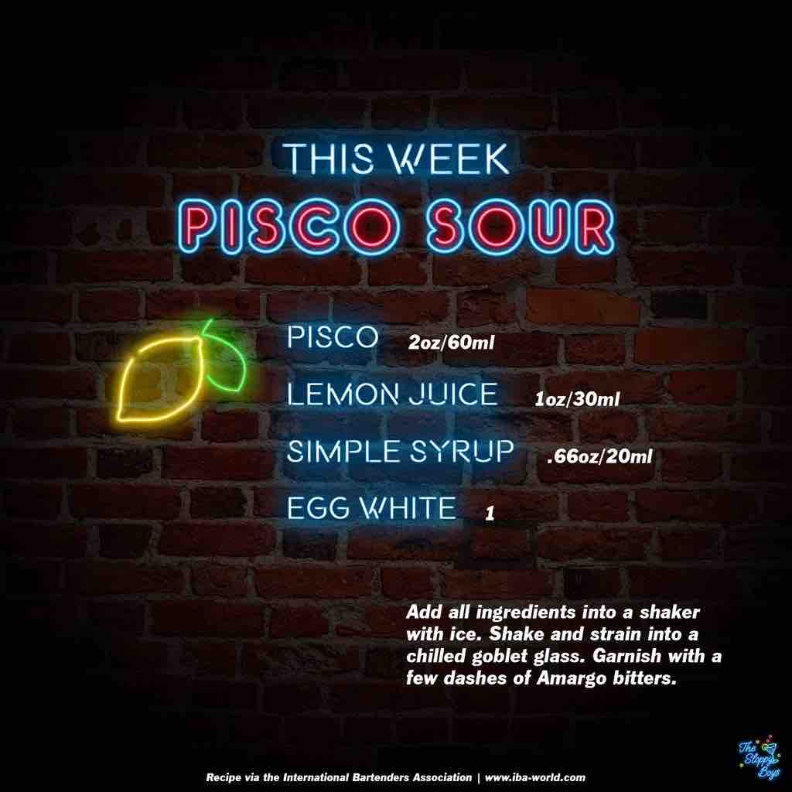

Pisco Sour
Ingredients
- Pisco (2oz/60ml)
- Lemon Juice (1oz/30ml)
- Simple Syrup (.66oz/20ml)
- Egg White (1)
Steps
- Add all ingredients into a shaker with ice.
- Shake and strain into a chilled goblet glass.
- Garnish with a few dashes of Amargo bitters.
Notes